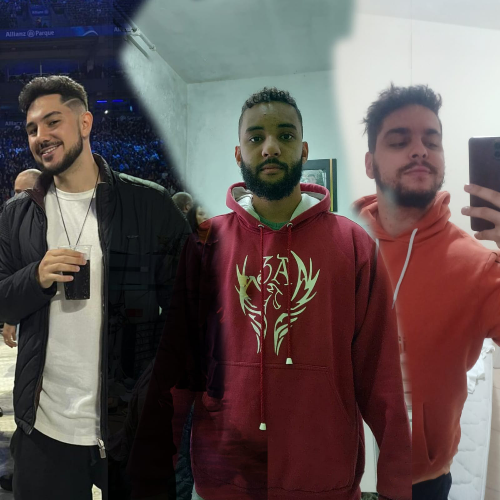

Relatório 1:
Por que a janela aberta não mostra a imagem colorida?
R: Pois no programa, a linha "img = cv.imread('messi5.jpg',0)", na chamada do imread, foi passado o segundo argumento como 0. Pesquisando na documentação oficial do projeto, descobri que essa flag está relacionada a como a imagem deve ser lida. O número 0 passado é equivalente à constante "IMREAD_GRAYSCALE" do OpenCV, portanto a imagem é carregada em escala de cinza.
Modifique o programa para que as imagens sejam exibidas mais rapidamente e depois para que sejam exibidas mais lentamente. Responda qual a explicação da alteração de velocidade de exibição e apresente suas soluções detalhadamente.
R: Primeiro, foi coletado o valor da velocidade digitado pelo usuário usando o método input. Em seguida, o valor de 0 a 10 foi dividido por 5.
print("A velocidade é dada de 0 a 10, sendo 5 a velocidade normal.")
velocidade = int(input("Digite a velocidade de 1 a 10: ")) / 5
Esse valor então foi inversamente multiplicado ao valor de 40ms do time.sleep:
time.sleep((1/25.0) * (1/velocidade))
Desse modo, foi possível aumentar o valor do delay de espera para o próximo quadro com o fator multiplicativo.
Altere: modifique o programa para que uma imagem da câmera seja salva em um arquivo "foto1.png" em disco.
cv2.imwrite('foto1.png', frame)
Modifique o programa para que o vídeo de captura seja gravado em um arquivo de vídeo "output.avi" em disco.
fourcc = cv2.VideoWriter_fourcc(*'XVID')
out = cv2.VideoWriter('output.avi', fourcc, 20.0, (640,480))
out.write(frame)
out.release()
Quando no código são executadas as operações com as imagens, elas devem ser executadas em qual ponto dos quatro programas estudados?
R: As operações devem ser realizadas diretamente no frame, ou seja, elas devem ser feitas no momento em que o frame é capturado. Após realizar a operação no frame, avança-se para o próximo até que o vídeo seja completamente processado. Por exemplo, como fizemos com os filtros em imagens, o mesmo seria realizado frame a frame até que o vídeo inteiro recebesse o filtro.
Obter com a webcam uma foto geral com TODOS os integrantes do GRUPO, sendo que cada um deve usar uma roupa de cor diferente, melhor se for com as cores Vermelho, Verde e Azul destacadas. Cuidem para a iluminação ficar boa. Podem usar qualquer editor de imagem caso necessitem “Compor” as fotos individuais para formar a foto geral.
Façam uma foto-montagem “Avatar”, juntando todos avatares numa única imagem. Meu “Avatar” por exemplo, é o Pikachu... A ordem dos avatares deve ser a mesma da foto geral. Podem usar qualquer editor de imagem para “Compor” as fotos individuais que cada um da equipe vai fornecer.
Filmem com a webcam DOIS vídeos com pessoas e DOIS videos com um objeto:
i) um com mudanças lentas de movimento
ii) e outro com mudanças rápidas de movimento.
iii) Em cada um dos vídeos os membros do grupo DEVEM ser diferentes. Podem ser apenas dois membros, um em cada vídeo, e sugiro escolherem os que possuem as melhores câmeras.